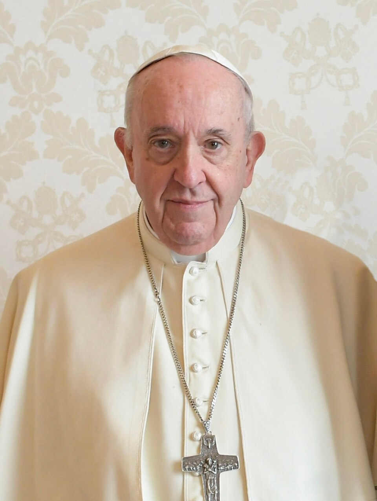

El papa es argentino: Bergoglio, arzobispo de Buenos Aires, es Francisco
A la quinta votación, los cardenales eligieron al primer pontífice americano de la historia, primer jesuita y primero en llamarse Francisco. «Mis hermanos fueron a buscarme casi al fin del mundo», dijo desde el balcón, y pidió al pueblo que rezara por él antes de bendecirlo.

A las 19:06, la chimenea de la Capilla Sixtina soltó el humo blanco y la plaza de San Pedro, empapada por la lluvia de todo el día, rugió bajo los paraguas. Una hora más tarde, el cardenal protodiácono pronunció un apellido que hizo enmudecer un segundo a la multitud y estallar a un país entero a once mil kilómetros: Bergoglio. Jorge Mario, arzobispo de Buenos Aires, 76 años, hijo de un ferroviario piamontés emigrado a la Argentina, es desde esta tarde Francisco, el papa número 266, el primero nacido en América, el primero jesuita y el primero que se atreve con el nombre del santo de los pobres, que ningún pontífice había osado tomar.
Su primera aparición fue una declaración de estilo sin necesidad de programa: salió al balcón sin la muceta roja de los papas, saludó con un «buonasera» de vecino, hizo rezar a la plaza por su antecesor Benedicto —el papa que renunció, cosa no vista en seis siglos, y que sigue vivo a unos kilómetros— y antes de dar su primera bendición pidió, cabeza inclinada y plaza en silencio, que el pueblo pidiera primero a Dios por él. «Los cardenales fueron a buscar al nuevo obispo de Roma casi al fin del mundo», bromeó. En Buenos Aires, las campanas de la Catedral se echaron a vuelo y la gente lloraba en la calle Rivadavia.
El cónclave nació de un terremoto: la renuncia de Benedicto XVI, anunciada en febrero en un latín que los presentes tardaron en creer, algo que ningún papa hacía desde hacía seis siglos, y que dejó a la Iglesia la rareza de elegir sucesor con el antecesor vivo. En las reuniones previas, cuentan los purpurados, una intervención breve torció climas: la del arzobispo de Buenos Aires, que habló de una Iglesia enferma de mirarse a sí misma y urgida de salir «a las periferias», y no sólo las geográficas. No era un desconocido en la Sixtina: los apuntes filtrados del cónclave de 2005 lo daban como el más votado después de Ratzinger. Esta vez, a la quinta votación, los votos fueron los suficientes y algo más: los cardenales, dicen, estallaron en aplausos antes de terminar el recuento.
Los primeros gestos del pontificado no esperaron a mañana: rechazó la limusina papal y volvió del balcón en el ómnibus con los demás cardenales —vino con ellos, vuelve con ellos—, y en el brindis de la cena les agradeció con humor porteño: «que Dios los perdone por lo que han hecho». En Buenos Aires, la Catedral se llenó sola un miércoles a la noche, hubo bocinazos de festejo como de clásico ganado y misas improvisadas en las villas donde el arzobispo era, simplemente, el padre Jorge. Y una certeza compartida hasta por los que no pisan iglesias: algo del subte, del mate y de la calle Rivadavia durmió anoche en el Vaticano. Habrá que ver si el Vaticano está listo para un papa que anda solo.
Los que lo conocen de este lado del océano describen al hombre: viaja en subte, cocina su comida, visita las villas sin cámaras, incomoda por igual a gobiernos y a curias, y carga también las preguntas que la Argentina de los años de plomo les hace a todos sus pastores. Hereda una Iglesia golpeada por escándalos financieros y abusos que ya no se pueden barrer bajo las alfombras vaticanas. Si el nombre elegido es promesa —Francisco: reparar la casa que se cae, empezar por los últimos—, el cónclave no eligió un administrador sino una dirección. Desde esta noche, cuando el Vaticano hable, tendrá acento porteño.